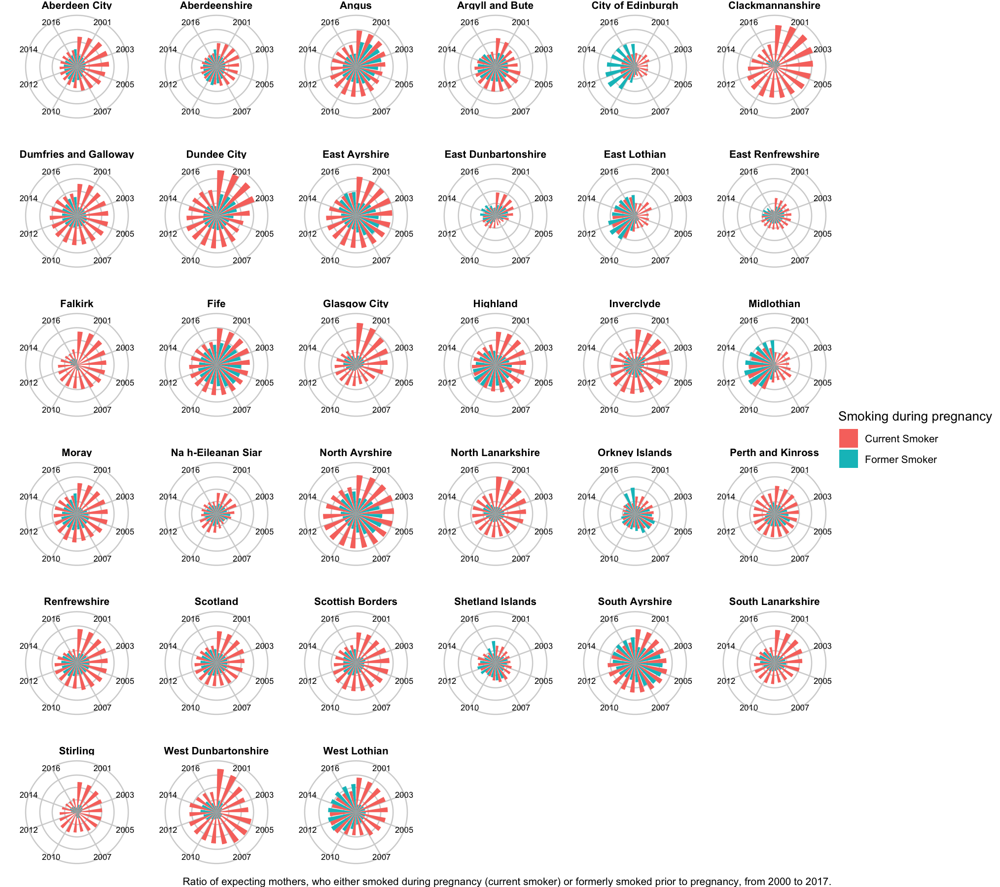
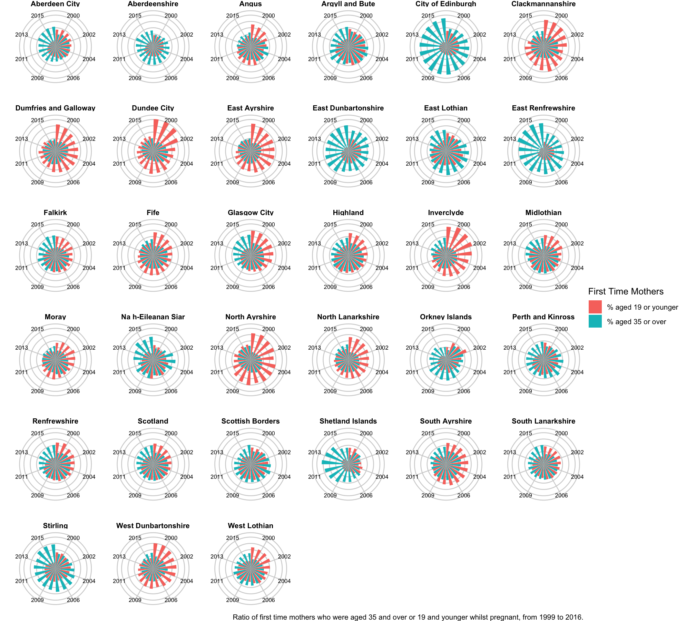

Welcome to a data visualisation produced by James Morgan, as part of the Data Visualisation for Professionals course through the University of Edinburgh.
Through the use of Scottish Government datasets, explore the health of babies and young children and to see if there's any relationship between various defining attributes, across the 32 Scottish council regions. Those being:
- The number of women who are pregant and smoking
- The age of first time mothers
- Babies born with a low birth weight
- The number of women who breast feed
- The number of babies who receive vaccines by 24 months
These two choropleth maps show the percentage of women who were current smokers during pregnancy, across Scotland, broken down by the 32 regions. The darker the colour, the higher the ratio of women who smoked.
As you can see, there is a great reduction of women who smoke in 2017, compared to 2000, with some regions reducing this ratio more than others.
So, how does this look per region, over the years?

This facet_wrapped column chart, shows each region's ratio of expecting mothers who are current and former smokers, trasformed into a circle.
Like a clock, starting at 12 o'clock, each segment represents a year. The higher the bar, the higher the ratio of expecting mothers who are current or former smokers
Some regions, like the City of Edinburgh have seen an increase in former smokers in pregant women, whereas other regions like Dundee City has seen more current smokers than former, whilst still seeing an overall decrease.
These three choropleth maps show the percentage of women who were either 19 and younger, or 35 and older when they first became mothers. Each region is either purple, if there is a higher percentage of women who were 19 and younger, or orange, if there is a higher percentage of women who were 35 and over. The darker the colour, the higher the ratio.
As you can see, there is a great reduction of younger first time mothers, gradually changing over the years between 2000 to 2016. You can see in 2008, about half of the regions have seen this change.
So, how does this look per region, over the years?

Most first time mothers are aged between 20 to 34. These visualisation focues on those aged outside of this range.
Some regions, like City of Edinburgh and East Dunbartonhire has seen a growing trend of first time mothers being aged 35 or older, with only a small ratio of women aged 19 or younger.
Whilst, other regions like Dundee City and North Ayrshire have seen a reducing, but higher ratio of first time mothers who are 19 or younger.
Very few births are for babies with a low birth weight, with a ratio between 0% to 4%. There also appears to be little overall change across the country, with some region seeing a smaller ratio of low weight babies at birth and other regions seing a larger ratio of low weight babies at birth.
However, is there a reason for this? Is there a connection between the ratio of low-weight babies, expecting mothers who smoke during pregancy and the ratio of younger or older mothers?

There is a lot to take in here, but the visualisation shows a clear correlation between these attributes.
Each dot represents one region and one year. For example, Dundee in 2000, or City of Edinburgh in 2017.
- The further to the right a dot is, the higher the ratio of babies born with a low birth weight, for that region and year.
- The higher the dot is, the higher the ratio of women who smoked during pregancy.
- The colour of the dot is determined by whether there was a higher ratio of first time mothers, who were aged 19 or younger, or 35 and older.
There also appears to be a strong correlation to the age of first time mothers. As in:
- Regions with a higher ratio of first time mothers aged 19 or younger, also saw a higher ratio of smokers and underweight babies (top right).
- Regions with a higher ratio of first time mothers aged 35 or older, also saw a lower ratio of smokers and underweight babies (bottom left).
IMPORTANT: It should be pointed out that whilst there appears to be a correlation, this does not suggest a causation. In other words, these attributes may not impact each other directly (a womens age may not impact the weight of their child) and there might be another unknown reason causing this correlation.
Thank you for taking the time to review this visualisation of babies and mothers in Scotland, over the years.
There's a lot more I'd like to add in the future.
- I want to add visualisations around women who breast feed and the number of babiess who receive vaccines by 24 months.
- I'd like to extend the choropleth maps, to include a hover-over action, that provides you, the user, with more information, such as the regions name, population size and the ratio of the given attribute.
- I'd also like to amend the static images into D3, to allow the same kind of pan/zoom and hover-over experience that I want to provide the choropleth maps.
- The visualisation isn't mobile friendly, as it doesn't work the best on small screens, which would be great to fix.
- Finally, I'd also like to provide way for the user to drill down to get specific information about a chosen region or year.
Pregnant and smoking
https://statistics.gov.scot/resource?uri=http%3A%2F%2Fstatistics.gov.scot%2Fdata%2Fsmoking-at-booking
Age of first time mothers
https://statistics.gov.scot/resource?uri=http%3A%2F%2Fstatistics.gov.scot%2Fdata%2Fage-at-first-birth
Breast Feeding
https://statistics.gov.scot/resource?uri=http%3A%2F%2Fstatistics.gov.scot%2Fdata%2Fbreastfeeding
Immune within 24 months
https://statistics.gov.scot/resource?uri=http%3A%2F%2Fstatistics.gov.scot%2Fdata%2F6-in-1-immunisation
Low birth weight
https://statistics.gov.scot/resource?uri=http%3A%2F%2Fstatistics.gov.scot%2Fdata%2Flow-birthweight
LAD20CD - 2020 LAD
https://data.gov.uk/dataset/24d87ad2-0fa9-4b35-816a-89f9d92b0042/local-authority-districts-april-2020-names-and-codes-in-the-united-kingdom
https://data.gov.uk/dataset/7dcad8af-eab7-45c1-a478-4e6dbc657eae/local-authority-districts-december-2015-full-clipped-boundaries-in-great-britain
Contains public sector information licensed under the Open Government Licence v3.0.
http://www.nationalarchives.gov.uk/doc/open-government-licence/version/3/